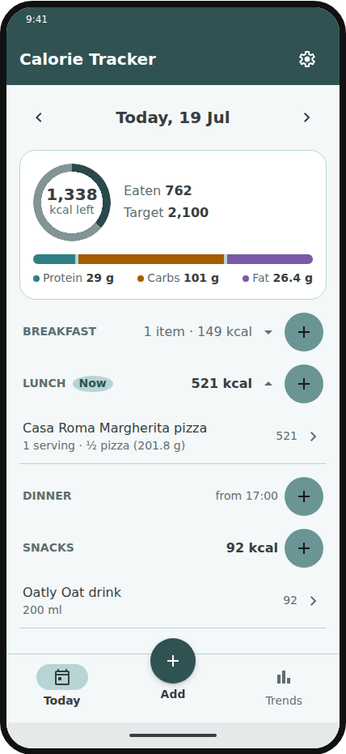
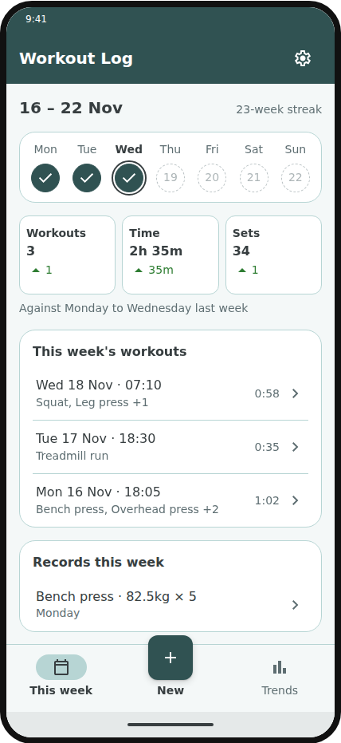
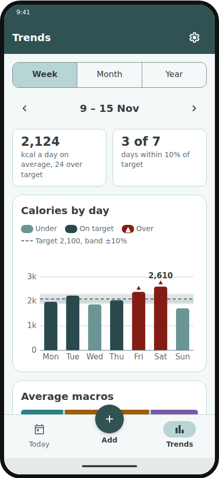
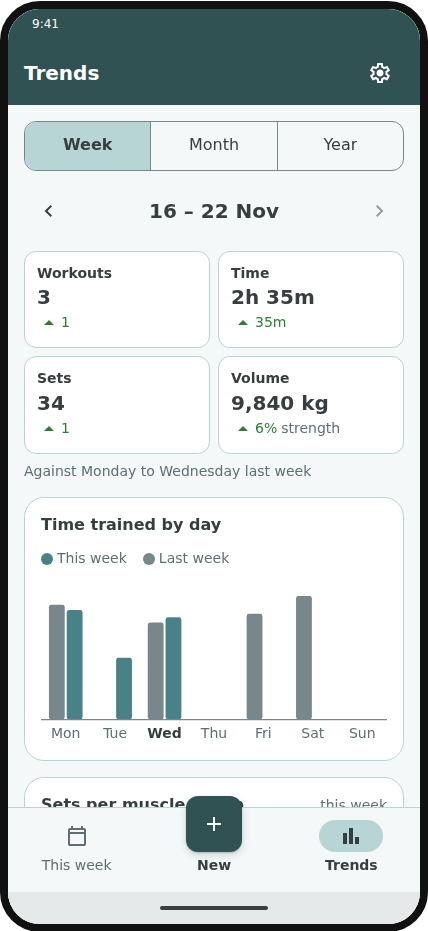

Where the two apps' UIs differ today, and what it takes to move the shared parts into a kit that both apps install, with a single stories site showing the kit and both apps' screens.
Both buttons are 3.5rem wide with the same colour and shadow. The shape, the label, how far the button lifts and the token names differ.

--radius-round), labelled Add, lifted 1.25rem. The Add label sits a little higher than the Today and Trends labels.
--radius-md, 12px), labelled New, lifted 1.5rem. The label is level with the other two by design.| Bottom bar | Calorie Tracker | Workout Log |
|---|---|---|
| Component | BottomNav, built from a NavDestinations list, CSS grid | MainTabBar, three buttons written out, flexbox |
| Size and lift tokens | --add-button-size, --add-button-lift | --nav-new-size, --nav-new-raise |
| Icon name | IconName.Plus | IconName.Add (same glyph) |
| Keyboard focus | Focus ring drawn round the circle | No rule of its own for the button |
| Test ids | bottom-nav, add-button | tab-bar, new-link |
AppScreen parameters | Destination, OnAdd, status-slot | Tab, OnNew, snackbar-slot |
| Room under the button | Screens add no extra bottom padding | Card lists add --nav-new-raise of bottom padding |


Visible rows change what a person sees. Code rows look the same today but are built differently.
| What | Calorie Tracker | Workout Log |
|---|---|---|
| Accent colour Visible | #29494c light, #acd5d2 dark (darkened so the calorie ring keeps 3:1 contrast) | #488286 light, #8cc4c1 dark |
| Error colour Visible | #841c16 light, #f4c1be dark | #a8231c light, #f2b8b5 dark |
| Card titles Visible | 20px; an h3 written in each screen inside SummaryCard | 16px; a TrendCard component with a title and an aside |
| Stat tiles Visible | StatTile: 24px figure over a caption, 12px corners | Three versions: StatTile (36px accent value, 20px corners, import review only), WeekTiles and TrendTiles (label, 16px value, change) |
| Chart legend Visible | A ChartLegend component with 24×16px pill swatches | 12px dots, written inside TrendBars and again inside MonthCalendar |
| Bar chart Visible | TrendBarChart: y-axis, grid lines, target band, value labels | TrendBars: no axis, paired bars for this and last period |
| Month calendar Visible | Square cells filled with the day's status colour; today marked with a box-shadow ring | 36px round dots, dashed when there is no workout; today marked with an outline ring |
| Snackbar Visible | 12px corners, raised shadow, no entry animation | 8px corners, no shadow, rises in over 150ms |
| Calendar tab icon Visible | Today: a calendar with a day square | Calendar: an empty calendar page |
| Period stepper Code | Two IconButtons and an h2 written in TrendsView | A PeriodStepper component that mirrors one chevron |
IconButton Code | Has Filled and Soft chip styles, Disabled and Pressed | None of those |
NumberField Code | One 161-line component | A 71-line component over a separate FieldInput |
| Tokens only one app has Code | Chip colours, ring, macro colours, sheet sizes, --letter-spacing-label, --opacity-thin | --color-bar-past, calendar, meter and legend sizes, --dialog-max-width |
| Area | Same path in both | Still identical | What they are |
|---|---|---|---|
| UI library | 64 | 25 | Buttons, icons, segmented control, list rows, spinner, screen frame, theme, base.css, tokens.css |
| Stories site | 58 | 26 | Phone frame, theme switch, token sheet, app icon sheet, component stories |
| UI tests | 53 | 18 | Tokens-only CSS, touch target, phone frame and component tests |
CI (.github) | 85 | 52 | Workflows, emulator scripts, story layout and README screenshot checks |
base.css, theme scriptapp-ui-kit src/Shields.UI/ package 1: tokens.css, base.css, theme.js, components, back button, lifecycle, theme service src/Shields.UI.Stories/ package 2: phone frame, layouts, theme switch, token sheet, stories for the kit's components src/Shields.UI.Testing/ package 3: the token list and the tokens-only, contrast and touch-target checks, for the apps' tests src/Shields.UI.Stories.Host/ the kit's own stories site (local work and PR checks) src/Shields.UI.Stories.All/ the combined site: kit + Calorie Tracker + Workout Log tests/Shields.UI.Tests/
| Group | Files | Work |
|---|---|---|
| Identical today Move | AppButton, SegmentedControl, Spinner, EmptyState, AppErrorBoundary, base.css, BackHandler, IBackButton, SystemBarInsetWriter, lifecycle interfaces, icon sizes and tones, the CSS of ListRow, FilterChips, LoadFailed and Icon | Rename the namespace. No visual change. |
| A few lines apart Move | ListRow, LoadFailed, BackButton, AppLifecycle, ThemeService, theme.js, ErrorView, StartupView | The differences are the app's name and the theme storage key. |
| Drifted Agree, then move | tokens.css, Icon and IconName, IconButton, Snackbar, NumberField, FilterChips, AppScreen, StartupGate, the bottom bar, StatTile, the card, the period stepper, the chart legend | One version of each, from your decisions in Part 3. |
| General, in one app only Move when wanted | From Workout Log: RadioGroup, ConfirmDialog, FieldInput. From Calorie Tracker: TextField, SelectField, DateStrip. | Move as is. The other app gains them. |
| Stories shell Move | PhoneFrame, PhoneLayout, ThemeLayout, ThemeSwitch, HoldPull, TokenSheet, AppIconSheet, blazor-ui.css, the host's index.html and iframe.html | All identical today. |
| Stays in each app Stay | Every screen page and view, models, routes, charts (TrendBarChart, TrendBars, MonthCalendar, CalorieRing), AddSheet, MealHeader, the workout and week components | They install the kit and build on it. |
Five of them carry something app-specific today and need a small redesign on the way in.
| Component | What ties it to an app today | In the kit |
|---|---|---|
Bottom bar and AppScreen | They use each app's own list of tabs (NavDestinations, MainTab). | The bar takes a list of items, the current one, and the raised button's label and icon. Each app passes its own. |
Icon | A fixed list of icon names that differs between the apps (Scan and Star in one, Record and Note in the other). | The kit holds every icon either app uses. A new icon is a kit change. |
theme.js | The storage key and script name contain the app's name. The upgrade tests check that a saved theme survives. | The key is read from an attribute on the script tag, so each app keeps its current key. Both apps' content security policy allows this. |
| Log event ids | Each app has its own UiEvent list. Ids never change once logged. | The kit gets its own list. The shared ids already match in both apps (2001–2002, 2101, 2201–2203, 3301, 3403–3405); the owner then gave the kit its own range, 9000–9999. |
tokens.css | One file holding shared and app-only tokens. | The kit ships the shared tokens. Each app keeps a small file for its own (ring and macro colours; meter and calendar sizes). |
| Question | Finding |
|---|---|
| Where to publish | nuget.org. Both apps already restore only from nuget.org, so they need no configuration change. GitHub Packages was ruled out: it needs an access token even to install a public package, which would mean a token on your machine, in each app's CI and in Dependabot. |
| Publishing secret | None. nuget.org's Trusted Publishing lets the kit's release workflow publish with a short-lived key it gets from GitHub. It needs a nuget.org account and a one-time policy for the kit repo. |
| What it means to be on nuget.org | The packages are public, like the two repos. A published version can be hidden but not deleted, and the package name is taken for good. |
| How the CSS and script arrive | The standard way for a Razor class library: files are served under _content/Shields.UI/. Each app's index.html and stories iframe.html change three paths. |
| How updates reach the apps | Dependabot already opens grouped NuGet update PRs each week and both repos auto-merge minor and patch updates once checks pass. A kit release arrives the same way. A breaking (major) kit release waits for you, as majors do today. |
| Delay | Up to a day, once both apps' Dependabot NuGet schedule changes from weekly to daily as decided. |
| Visual safety net | The update PR runs each app's story layout check and README screenshot check, so a kit change that alters a screen fails the PR until the screenshots are retaken. |
One BlazingStory site, built in the kit repo, with four top-level sections: Foundations, Components, Calorie Tracker, Workout Log. Each app keeps its own small site as well, because its PR checks and README screenshots run against it.
| What has to change | Why |
|---|---|
| Split each app's stories project in two | Today the stories are compiled into the site itself, so no other site can load them. They move into a library (CalorieTracker.UI.Stories) with a thin host beside it (CalorieTracker.UI.Stories.Host). The combined site references the two libraries. Both apps' sites already pass BlazingStory a list of assemblies, which is the hook this uses. |
| Prefix each app's story titles | Screens/Dashboard becomes Calorie Tracker/Screens/Dashboard, so the two apps' Screens and Trends stories do not collide. The story layout script, the README screenshot script and the story coverage tests use these paths and change with them. |
| Move sample service set-up into the stories library | Workout Log registers seven sample services in its site's Program.cs. As one method in the library, both its own site and the combined site can call it. |
| A build switch in each app | One site cannot load two versions of the kit. The combined build therefore compiles both apps against the kit's current source, not the package each has installed. |
| Turn off locked restore for that build | Both apps fail a CI restore that would change packages.lock.json. Swapping the package for source changes it, so the combined build passes -p:RestoreLockedMode=false. |
<!-- in each app's UI and stories projects --> <ItemGroup Condition="'$(UseKitSource)' != 'true'"> <PackageReference Include="Shields.UI" /> </ItemGroup> <ItemGroup Condition="'$(UseKitSource)' == 'true'"> <ProjectReference Include="$(KitPath)/src/Shields.UI/Shields.UI.csproj" /> </ItemGroup>
main, daily, and on demand. Rebuilding the moment an app changes needs a token in each app repo to notify the kit repo; daily avoids that.main built against the kit's main. For a short time after a kit change, this is newer than what an app has installed. The site footer should name the three commits.| Check | Kit | Each app |
|---|---|---|
| Tokens only, no literal colours or sizes | For the kit's CSS | For the app's CSS, using the kit's token list from the testing package |
| Contrast and touch targets | For shared tokens and components | Only for app-only tokens and components |
| Component tests (bUnit) | For moved components | For app components and screens |
| Story for every component and view | For kit components | For app components and views |
| Story layout (clipping, overflow) | Kit stories; optionally the combined site | Unchanged, on the app's own site |
| README screenshots | None | Unchanged |
| E2E on the emulator | None | Unchanged, apart from renamed test ids on the bottom bar |
| New: no local copy of a kit component | A test that fails when the app declares a component or token the kit already has |
The last row is what enforces consistency from then on. Both AGENTS.md files also gain a rule: a general component or token is added to the kit, not to the app.
These are the parts I could not confirm from reading the code. A one-day trial with AppButton, the tokens and one screen from each app would settle all three.
| Risk | Why it might bite | If it does |
|---|---|---|
| BlazingStory loading stories from three libraries | Both sites pass one assembly today. Loading several, with four-level titles, is supported by the parameter but untested here. BlazingStory is a preview package (1.0.0-preview.97). | Publish three sites under one address with a shared landing page. |
| Both apps' UI in one WebAssembly site | Each UI library pulls in its Core and SQLite. Each stories project already strips the native SQLite file; the combined site must do it for both. | Same fallback. |
| Package versions across repos | Each repo pins its own versions and treats warnings as errors. If an app pins an older ASP.NET Core package than the kit, the source build fails with a downgrade error. | Keep the kit on the lowest versions it needs; Dependabot keeps the apps current. |
| Step | Where | What | Done when |
|---|---|---|---|
| 0 | You | Merge PR #134. Create a nuget.org account and the Trusted Publishing policy for app-ui-kit. | The decisions are already made (Part 3). |
| 1 | Kit | The trial above, kept as the start of the repo. | One site shows a kit component and one screen from each app. |
| 2 | Kit | Repo set-up: build, tests, lint, story layout check, release to nuget.org, stories site on GitHub Pages. | Version 1.0.0 is on nuget.org with the identical files. |
| 3 | Kit | The drifted components, one PR each, built to your decisions. The bottom bar is first. | Every row of "What moves into the kit" has a story and tests. |
| 4 | Workout Log | Install the kit; delete the local copies a group at a time; split the tokens file; rename test ids. First because its redesign is already merged. | No general component is left in the app; all checks green; README screenshots retaken. |
| 5 | Calorie Tracker | The same. | The same. |
| 6 | Both apps | Split the stories project, prefix the titles, add the build switch. | Each app's own site and checks still pass. |
| 7 | Kit | The combined site and its workflow. Stop publishing the two app sites and point their README links at the combined one. | One address shows all four sections. |
| 8 | All three | The no-local-copy test and the AGENTS.md rules. | Adding a duplicate component to an app fails its PR. |
Steps 4 and 5 each fit your epic workflow as one epic per app. Steps 2 and 3 are an epic in the kit repo. The kit repo starts with its own copy of some CI scripts (lint, story layout, versioning); sharing those across the three repos is a separate, later job.
| Question | Decision | Which app changes |
|---|---|---|
| Raised button shape | Rounded square, 12px corners | Calorie Tracker |
| Raised button lift | 1.5rem, so its label is level with the tab labels | Calorie Tracker |
| Accent and error colours | Calorie Tracker's darker pair (#29494c, #841c16) | Workout Log |
| Card titles | 16px, on a shared card based on TrendCard | Calorie Tracker |
| Stat tile | Label first: a small bold label, the value, then an optional change or caption line | Calorie Tracker; Workout Log's import review tiles |
| Chart legend | 12px dots. Calorie Tracker's Over marker moves beside its dot, so colour is still not the only cue. | Calorie Tracker |
| Snackbar | 12px corners and a raised shadow, rising in over 150ms | Both, slightly |
| Names | BottomNav, IconName.Plus, test ids bottom-nav and add-button. The visible labels stay Add and New. | Workout Log, including its E2E tests |
| Question | Decision |
|---|---|
| Where to publish | Publicly on nuget.org |
| Names | Repo app-ui-kit; packages Shields.UI, Shields.UI.Stories and Shields.UI.Testing. Whether those names are free on nuget.org has not been checked yet. |
| Releases | A new version on every merge to the kit's main, using the PR's semver label |
| Update speed | Dependabot checks NuGet daily in both apps |
| App stories sites | Retired once the combined site is live. Each app's site still runs inside its own CI checks. |